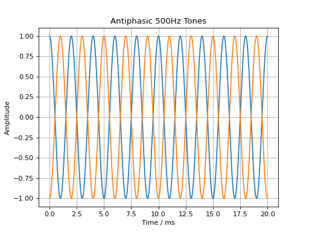
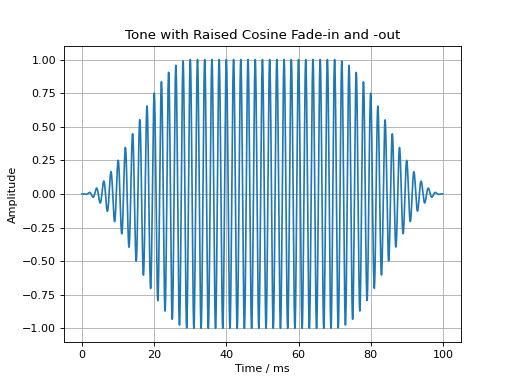
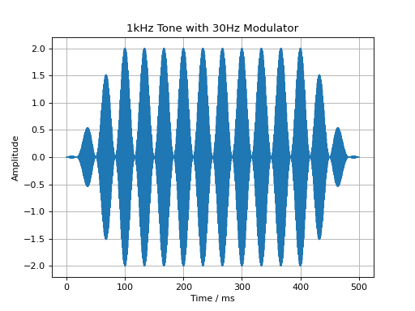
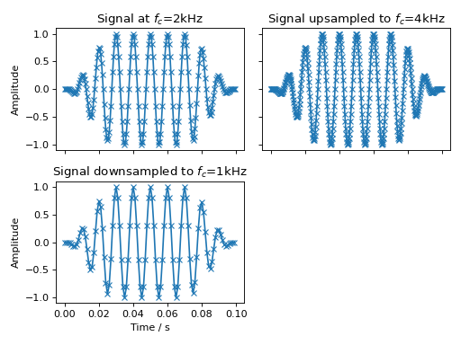
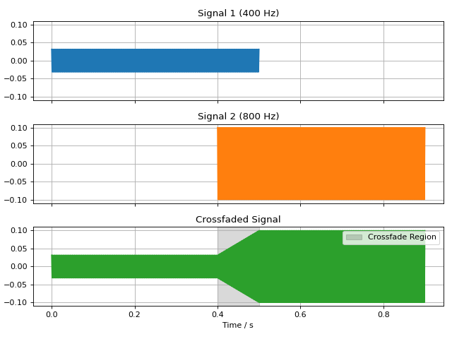
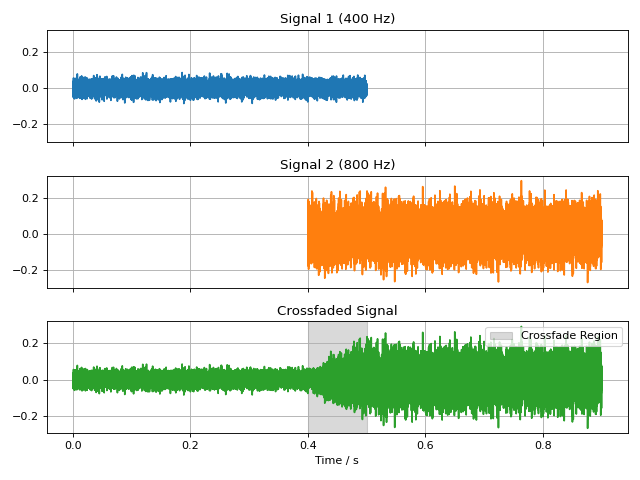

Basic Signal Modifications
Basic signal modifications, such as adding a tone or noise, are directly
available as methods. Tones are easily added through the
audiotoolbox.Signal.add_tone() method. A signal with two antiphasic
500 Hz tones in its two channels is created by running:
import audiotoolbox as audio
import numpy as np
import matplotlib.pyplot as plt
sig = audio.Signal(n_channels=2, duration=20e-3, fs=48000)
sig.ch[0].add_tone(frequency=500, amplitude=1, start_phase=0)
sig.ch[1].add_tone(frequency=500, amplitude=1, start_phase=np.pi)
plt.plot(sig.time * 1e3, sig)
plt.xlabel('Time / ms')
plt.ylabel('Amplitude')
plt.title('Antiphasic 500Hz Tones')
plt.grid(True)
plt.show()
(Source code, png, hires.png, pdf)
{kind=link}
{kind=link}

Fade-in and fade-out ramps with different shapes can be applied using the
audiotoolbox.Signal.add_fade_window() method:
import audiotoolbox as audio
import matplotlib.pyplot as plt
sig = audio.Signal(n_channels=1, duration=100e-3, fs=48000)
sig.add_tone(frequency=500, amplitude=1, start_phase=0)
sig.add_fade_window(rise_time=30e-3, win_type='cos')
plt.plot(sig.time * 1e3, sig)
plt.xlabel('Time / ms')
plt.ylabel('Amplitude')
plt.title('Tone with Raised Cosine Fade-in and -out')
plt.grid(True)
plt.show()
(Source code, png, hires.png, pdf)
{kind=link}
{kind=link}

Similarly, a cosine modulator can be added through the
audiotoolbox.Signal.add_cos_modulator() method:
import audiotoolbox as audio
import matplotlib.pyplot as plt
sig = audio.Signal(n_channels=1, duration=500e-3, fs=48000)
sig.add_tone(1000)
sig.add_cos_modulator(frequency=30, m=1)
sig.add_fade_window(100e-3)
plt.plot(sig.time * 1e3, sig)
plt.xlabel('Time / ms')
plt.ylabel('Amplitude')
plt.title('1kHz Tone with 30Hz Modulator')
plt.grid(True)
plt.show()
(Source code, png, hires.png, pdf)
{kind=link}
{kind=link}

Resampling
Resampling is done using the audiotoolbox.Signal.resample() method.
fig, ax = plt.subplots(2, 2, sharex='all', sharey='all')
sig = audio.Signal(1, 100e-3, fs=2000).add_tone(100).add_fade_window(30e-3)
ax[0, 0].plot(sig.time, sig, 'x-')
ax[0, 0].set_title('Signal at $f_c$=2kHz')
sig.resample(4000)
ax[0, 1].plot(sig.time, sig, 'x-')
ax[0, 1].set_title('Signal upsampled to $f_c$=4kHz')
sig.resample(1000)
ax[1, 0].plot(sig.time, sig, 'x-')
ax[1, 0].set_title('Signal downsampled to $f_c$=1kHz')
ax[1, 1].set_visible(False)
ax[1, 0].set_xlabel("Time / s")
ax[0, 0].set_ylabel("Amplitude")
ax[1, 0].set_ylabel("Amplitude")
fig.tight_layout()
fig.show()
(Source code, png, hires.png, pdf)
{kind=link}
{kind=link}

Trimming Signals
The audiotoolbox.Signal.trim() method can be used to shorten a signal
by “trimming” it to a specified start and end time. This is useful for
extracting a segment of interest from a longer signal. The method modifies
the signal in-place.
For example, to extract the segment between 0.2 and 0.8 seconds from a 1-second signal:
>>> import audiotoolbox as audio
>>> # Create a 1-second noise signal
>>> signal = audio.Signal(1, 1, 48000).add_noise()
>>> print(f'Original duration: {signal.duration:.2f}s')
Original duration: 1.00s
>>>
>>> # Trim the signal to the segment between 0.2s and 0.8s
>>> signal.trim(0.2, 0.8)
>>> print(f'New duration: {signal.duration:.2f}s')
New duration: 0.60s
You can also specify only a start time to trim the beginning of the signal, or use negative values to trim from the end.
>>> # Create another 1-second signal
>>> signal = audio.Signal(1, 1, 48000).add_noise()
>>>
>>> # Trim the first 200ms
>>> signal.trim(0.2)
>>> print(f'Duration after trimming start: {signal.duration:.2f}s')
Duration after trimming start: 0.80s
>>>
>>> # Trim the last 100ms of the remaining signal
>>> signal.trim(0, -0.1)
>>> print(f'Duration after trimming end: {signal.duration:.2f}s')
Duration after trimming end: 0.70s
Crossfading Signals
The audiotoolbox.crossfade() function can be used to create a smooth
transition between two signals. It overlaps the end of the first signal
with the beginning of the second, applying a fade-out and fade-in ramp.
The fade_type can be either 'linear' for a constant power crossfade,
or 'cos' for a constant amplitude crossfade.
Linear Fade
import audiotoolbox as audio
import matplotlib.pyplot as plt
import numpy as np
# Create two distinct signals
sig1 = audio.Signal(1, 0.5, 48000).add_tone(400).set_dbfs(-30)
sig2 = audio.Signal(1, 0.5, 48000).add_tone(400).set_dbfs(-20)
# Crossfade them with a 100ms linear fade
fade_duration = 100e-3
crossfaded_sig = audio.crossfade(sig1, sig2, fade_duration, fade_type='linear')
# --- Plotting ---
fig, ax = plt.subplots(3, 1, figsize=(8, 6), sharex=True, sharey=True)
# Plot original signals for context
ax[0].plot(sig1.time, sig1, color='C0')
ax[0].set_title('Signal 1 (400 Hz)')
ax[0].grid(True)
# Shift time axis for the second signal to show its original position
time_sig2 = sig2.time + sig1.duration - fade_duration
ax[1].plot(time_sig2, sig2, color='C1')
ax[1].set_title('Signal 2 (800 Hz)')
ax[1].grid(True)
# Plot the final crossfaded signal
ax[2].plot(crossfaded_sig.time, crossfaded_sig, color='C2')
ax[2].set_title('Crossfaded Signal')
ax[2].set_xlabel('Time / s')
ax[2].grid(True)
# Highlight the crossfade region
fade_start_time = sig1.duration - fade_duration
ax[2].axvspan(fade_start_time, sig1.duration, color='black', alpha=0.15, label='Crossfade Region')
ax[2].legend(loc='upper right')
for a in ax:
a.label_outer()
plt.tight_layout()
plt.show()
(Source code, png, hires.png, pdf)
{kind=link}
{kind=link}

Cosine Fade
import audiotoolbox as audio
import matplotlib.pyplot as plt
import numpy as np
# Create two distinct signals
sig1 = audio.Signal(1, 0.5, 48000).add_noise().set_dbfs(-30)
sig2 = audio.Signal(1, 0.5, 48000).add_noise().set_dbfs(-20)
# Crossfade them with a 100ms cosine fade
fade_duration = 100e-3
crossfaded_sig = audio.crossfade(sig1, sig2, fade_duration, fade_type='cos')
# --- Plotting ---
fig, ax = plt.subplots(3, 1, figsize=(8, 6), sharex=True, sharey=True)
# Plot original signals for context
ax[0].plot(sig1.time, sig1, color='C0')
ax[0].set_title('Signal 1 (400 Hz)')
ax[0].grid(True)
# Shift time axis for the second signal to show its original position
time_sig2 = sig2.time + sig1.duration - fade_duration
ax[1].plot(time_sig2, sig2, color='C1')
ax[1].set_title('Signal 2 (800 Hz)')
ax[1].grid(True)
# Plot the final crossfaded signal
ax[2].plot(crossfaded_sig.time, crossfaded_sig, color='C2')
ax[2].set_title('Crossfaded Signal')
ax[2].set_xlabel('Time / s')
ax[2].grid(True)
# Highlight the crossfade region
fade_start_time = sig1.duration - fade_duration
ax[2].axvspan(fade_start_time, sig1.duration, color='black', alpha=0.15, label='Crossfade Region')
ax[2].legend(loc='upper right')
for a in ax:
a.label_outer()
plt.tight_layout()
plt.show()
(Source code, png, hires.png, pdf)
{kind=link}
{kind=link}
